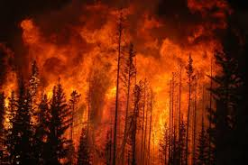
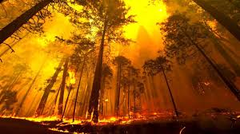
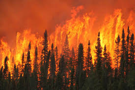
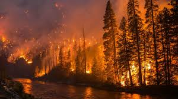

Forest Fire Or Wildfire
A wildfire or wildland fire is an uncontrolled fire in an area of combustible vegetation occurring in rural areas. Depending on the type of vegetation present, a wildfire can also be classified more specifically as a brush fire, bushfire, desert fire, forest fire, grass fire, hill fire, peat fire, vegetation fire, or veld fire. Fossil charcoal indicates that wildfires began soon after the appearance of terrestrial plants 420 million years ago. Wildfire's occurrence throughout the history of terrestrial life invites conjecture that fire must have had pronounced evolutionary effects on most ecosystems' flora and fauna. Earth is an intrinsically flammable planet owing to its cover of carbon-rich vegetation, seasonally dry climates, atmospheric oxygen, and widespread lightning and volcanic ignitions. Wildfires can be characterized in terms of the cause of ignition, their physical properties, the combustible material present, and the effect of weather on the fire. Wildfires can cause damage to property and human life, although naturally occurring wildfires may have beneficial effects on native vegetation, animals, and ecosystems that have evolved with fire. High-severity wildfire creates complex early seral forest habitat (also called "snag forest habitat"), which often has higher species richness and diversity than unburned old forest. Many plant species depend on the effects of fire for growth and reproduction. Wildfires in ecosystems where wildfire is uncommon or where non-native vegetation has encroached may have strongly negative ecological effects. Wildfire behavior and severity result from a combination of factors such as available fuels, physical setting, and weather. Analyses of historical meteorological data and national fire records in western North America show the primacy of climate in driving large regional fires via wet periods that create substantial fuels, or drought and warming that extend conducive fire weather. Strategies for wildfire prevention, detection, and suppression have varied over the years. One common and inexpensive technique is controlled burning: intentionally igniting smaller fires to minimize the amount of flammable material available for a potential wildfire. Vegetation may be burned periodically to maintain high species diversity and limit the accumulation of plants and other debris that may serve as fuel. Wildland fire use is the cheapest and most ecologically appropriate policy for many forests. Fuels may also be removed by logging, but fuels treatments and thinning have no effect on severe fire behavior when under extreme weather conditions. Wildfire itself is reportedly "the most effective treatment for reducing a fire's rate of spread, fireline intensity, flame length, and heat per unit of area", according to Jan Van Wagtendonk, a biologist at the Yellowstone Field Station. Building codes in fire-prone areas typically require that structures be built of flame-resistant materials and a defensible space be maintained by clearing flammable materials within a prescribed distance from the structure.
Causes
The most common direct human causes of wildfire ignition include arson, discarded cigarettes, power-lines arcs (as detected by arc mapping), and sparks from equipment. Ignition of wildland fires via contact with hot rifle-bullet fragments is also possible under the right conditions. Wildfires can also be started in communities experiencing shifting cultivation, where land is cleared quickly and farmed until the soil loses fertility, and slash and burn clearing. Forested areas cleared by logging encourage the dominance of flammable grasses, and abandoned logging roads overgrown by vegetation may act as fire corridors. Annual grassland fires in southern Vietnam stem in part from the destruction of forested areas by US military herbicides, explosives, and mechanical land-clearing and -burning operations during the Vietnam War. The most common cause of wildfires varies throughout the world. In Canada and northwest China, lightning operates as the major source of ignition. In other parts of the world, human involvement is a major contributor. In Africa, Central America, Fiji, Mexico, New Zealand, South America, and Southeast Asia, wildfires can be attributed to human activities such as agriculture, animal husbandry, and land-conversion burning. In China and in the Mediterranean Basin, human carelessness is a major cause of wildfires. In the United States and Australia, the source of wildfires can be traced both to lightning strikes and to human activities (such as machinery sparks, cast-away cigarette butts, or arson). Coal seam fires burn in the thousands around the world, such as those in Burning Mountain, New South Wales; Centralia, Pennsylvania; and several coal-sustained fires in China. They can also flare up unexpectedly and ignite nearby flammable material.
Spread
The spread of wildfires varies based on the flammable material present, its vertical arrangement and moisture content, and weather conditions. Fuel arrangement and density is governed in part by topography, as land shape determines factors
such as available sunlight and water for plant growth. Overall, fire types can be generally characterized by their fuels as follows:
1. Ground fires are fed by subterranean roots, duff and other buried organic matter. This fuel type is especially susceptible to ignition due to spotting. Ground fires typically burn by smoldering, and can burn slowly for days to
months, such as peat fires in Kalimantan and Eastern Sumatra, Indonesia, which resulted from a riceland creation project that unintentionally drained and dried the peat.
2. Crawling or surface fires are fueled by low-lying vegetation on the forest floor such as leaf and timber litter, debris, grass, and low-lying shrubbery. This kind of fire often burns at a relatively lower temperature than crown
fires (less than 400 °C (752 °F)) and may spread at slow rate, though steep slopes and wind can accelerate the rate of spread.
3. Ladder fires consume material between low-level vegetation and tree canopies, such as small trees, downed logs, and vines. Kudzu, Old World climbing fern, and other invasive plants that scale trees may also encourage ladder fires.
4. Crown, canopy, or aerial fires burn suspended material at the canopy level, such as tall trees, vines, and mosses. The ignition of a crown fire, termed crowning, is dependent on the density of the suspended material, canopy height,
canopy continuity, sufficient surface and ladder fires, vegetation moisture content, and weather conditions during the blaze. Stand-replacing fires lit by humans can spread into the Amazon rain forest, damaging ecosystems not particularly
suited for heat or arid conditions.[43]
5. In monsoonal areas of north Australia, surface fire spread, including across intended firebreaks, by burning or smoldering pieces of wood or burning tufts of grass carried intentionally by large flying birds accustomed to catch
prey flushed out by wildfires. Species implicated are Black Kite (Milvus migrans), Whistling Kite (Haliastur sphenurus), and Brown Falcon (Falco berigora). Local Aborigines have known of this behavior for a long time, including in their
mythology.
Prevention
Wildfire prevention refers to the preemptive methods aimed at reducing the risk of fires as well as lessening its severity and spread. Prevention techniques aim to manage air quality, maintain ecological balances, protect resources, and to affect future fires. North American firefighting policies permit naturally caused fires to burn to maintain their ecological role, so long as the risks of escape into high-value areas are mitigated. However, prevention policies must consider the role that humans play in wildfires, since, for example, 95% of forest fires in Europe are related to human involvement. Sources of human-caused fire may include arson, accidental ignition, or the uncontrolled use of fire in land-clearing and agriculture such as the slash-and-burn farming in Southeast Asia. Drawing of a grizzly bear with human features. He is wearing blue jeans with a belt and a brimmed hat with the name "Smokey" on the cap, and has a shovel in his left hand. He is pointing to the viewer while the text "Only You" is seen below him. 1985 Smokey Bear poster with part of his admonition, "Only you can prevent forest fires". In 1937, U.S. President Franklin D. Roosevelt initiated a nationwide fire prevention campaign, highlighting the role of human carelessness in forest fires. Later posters of the program featured Uncle Sam, characters from the Disney movie Bambi, and the official mascot of the U.S. Forest Service, Smokey Bear. Reducing human-caused ignitions may be the most effective means of reducing unwanted wildfire. Alteration of fuels is commonly undertaken when attempting to affect future fire risk and behavior. Wildfire prevention programs around the world may employ techniques such as wildland fire use and prescribed or controlled burns. Wildland fire use refers to any fire of natural causes that is monitored but allowed to burn. Controlled burns are fires ignited by government agencies under less dangerous weather conditions.
-----------------------